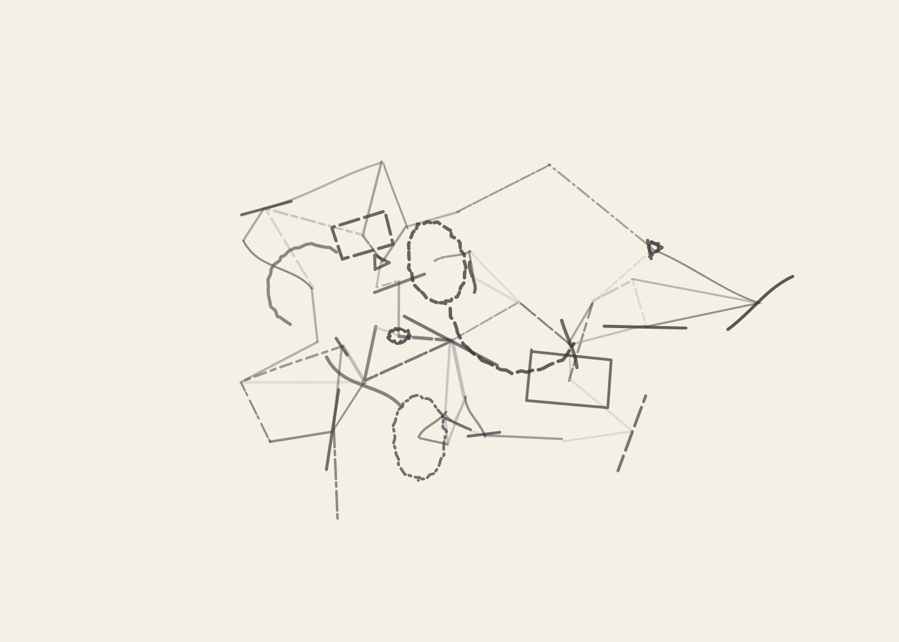
01
Connected Fields · Marker
- Seed
- AA-20261101-01-68688
- Series
- Connected Fields
- Format
- Landscape · 1400 × 1000
- Additional φ pull
- 86%
- Material
- Marker
- Palette
- mono
Can one number compose a drawing?
14 drawings made on 1 November 2026. Different materials, different compositions, and room to make each one your own.

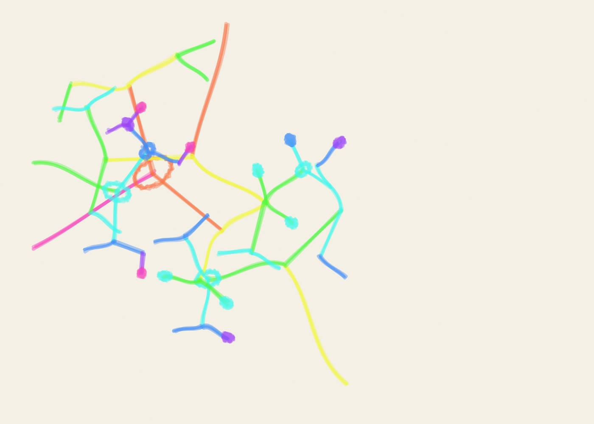
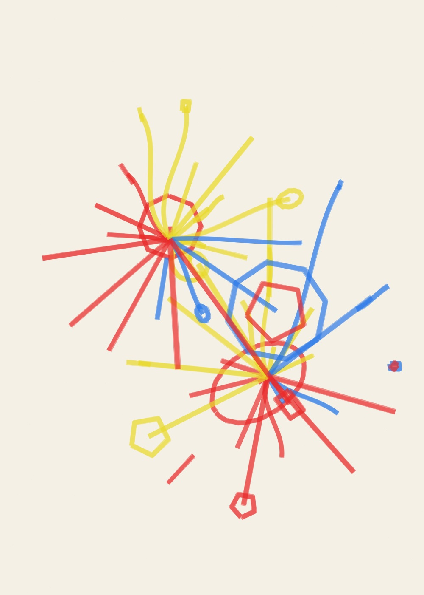
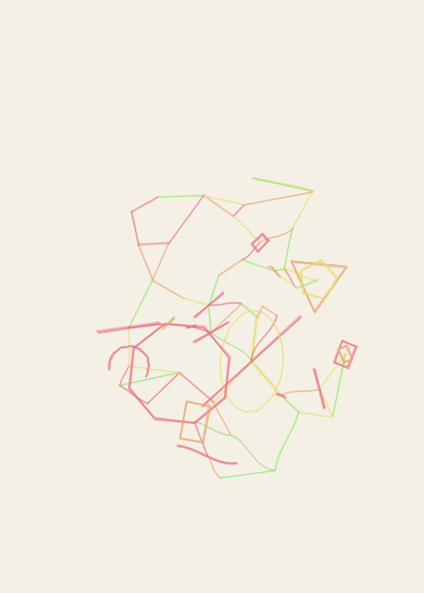
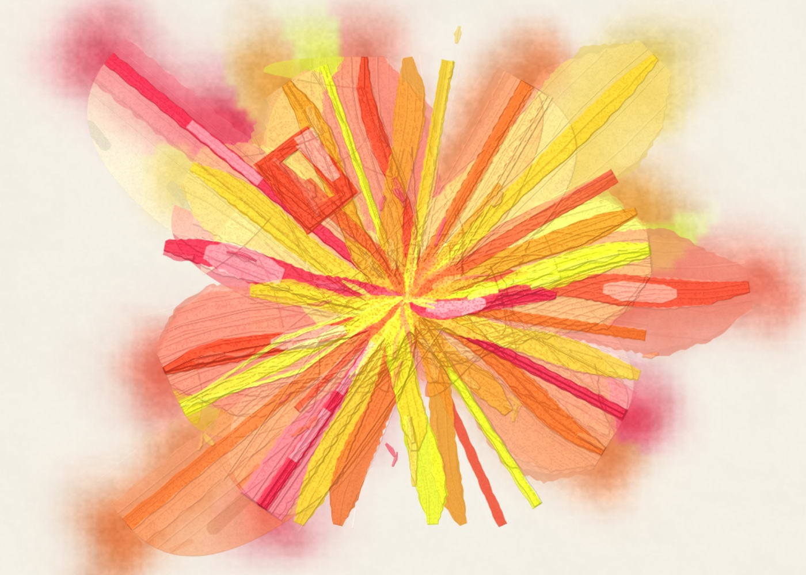
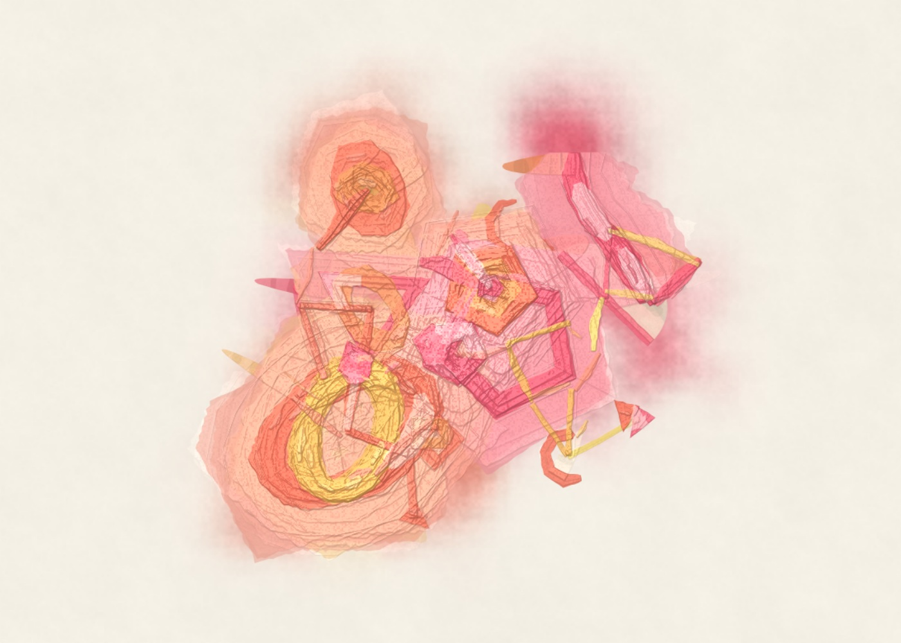
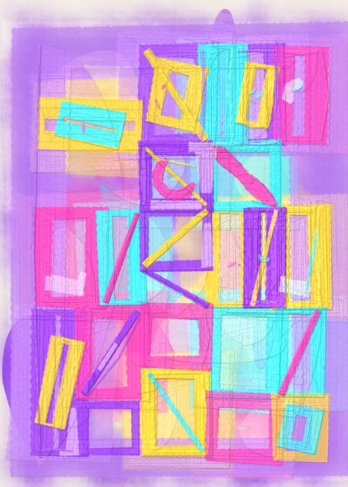
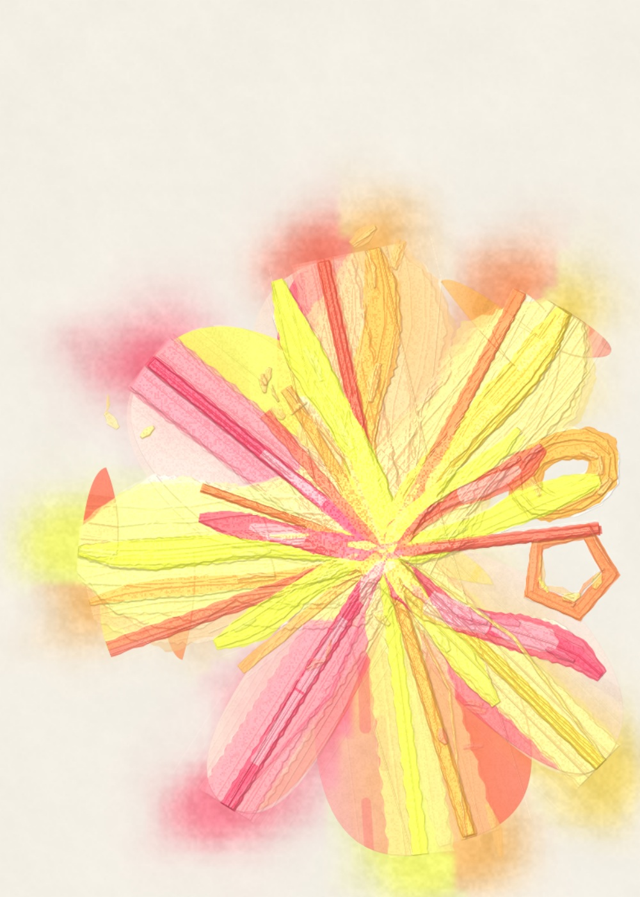
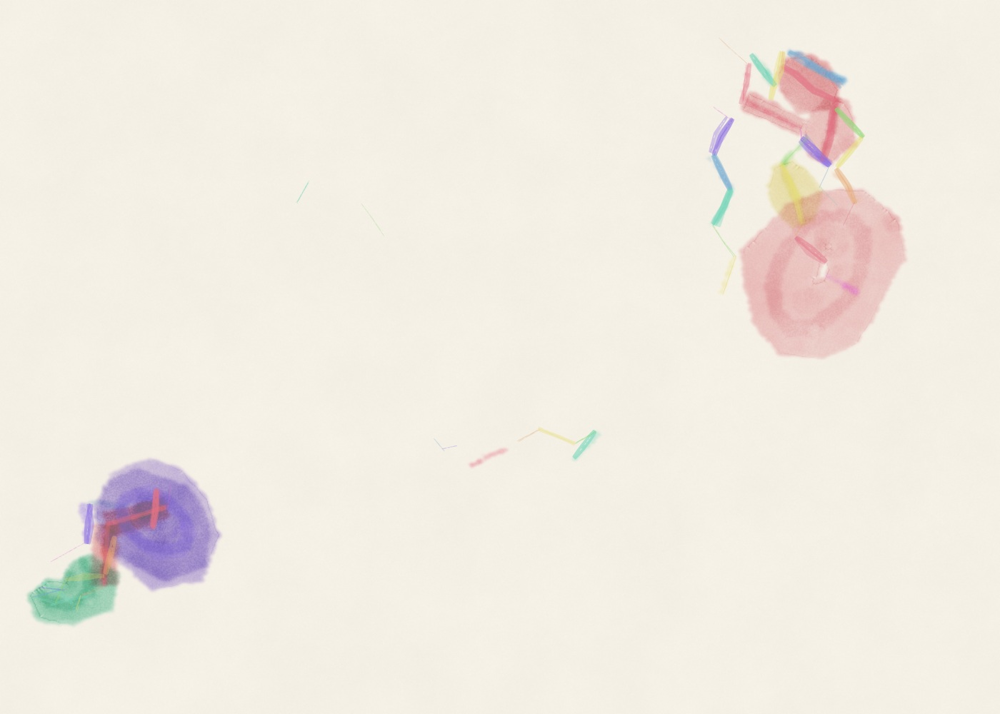
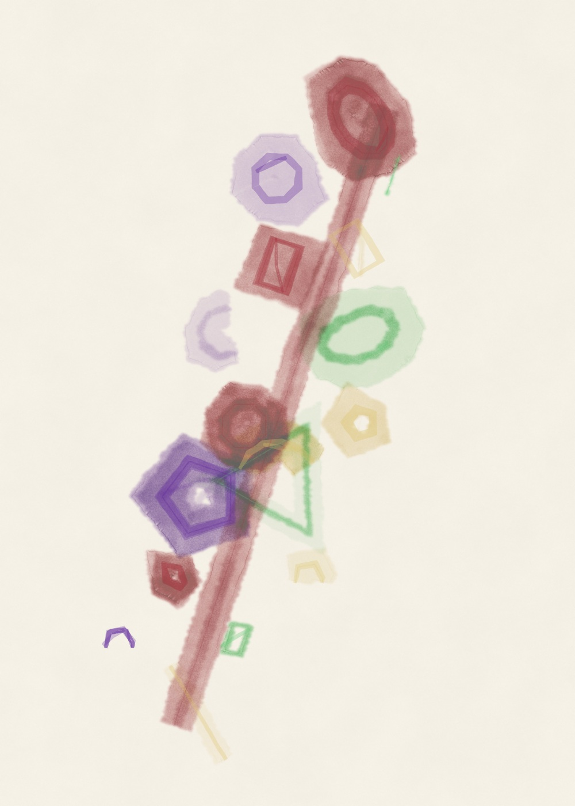
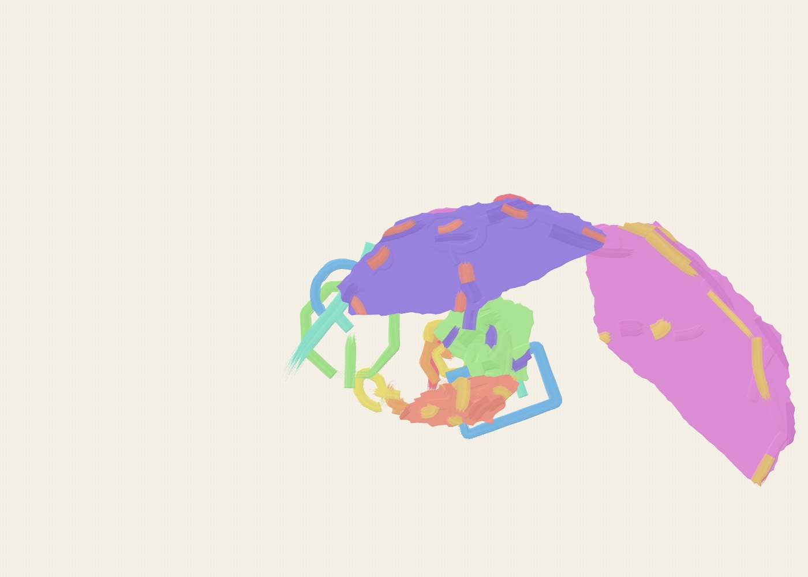
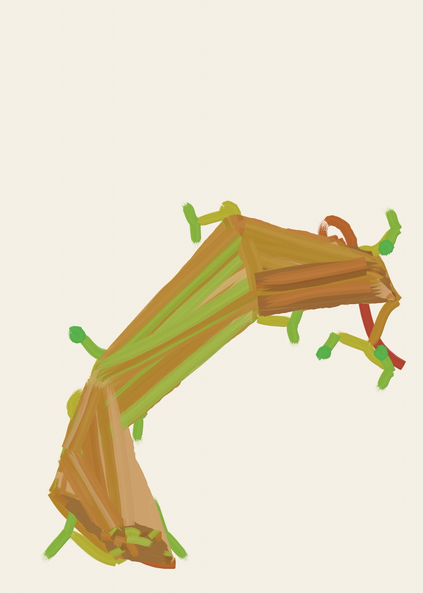
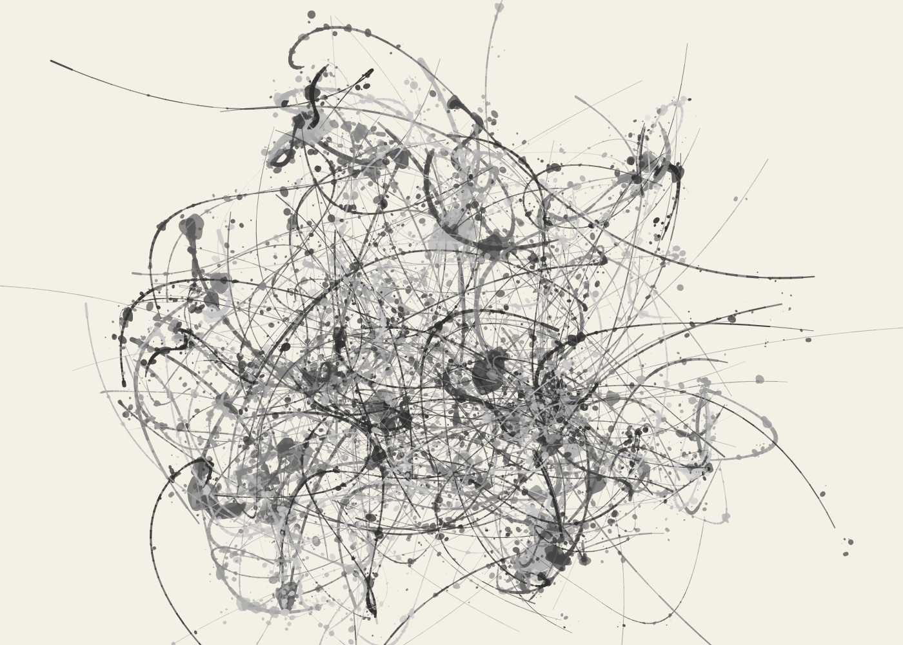
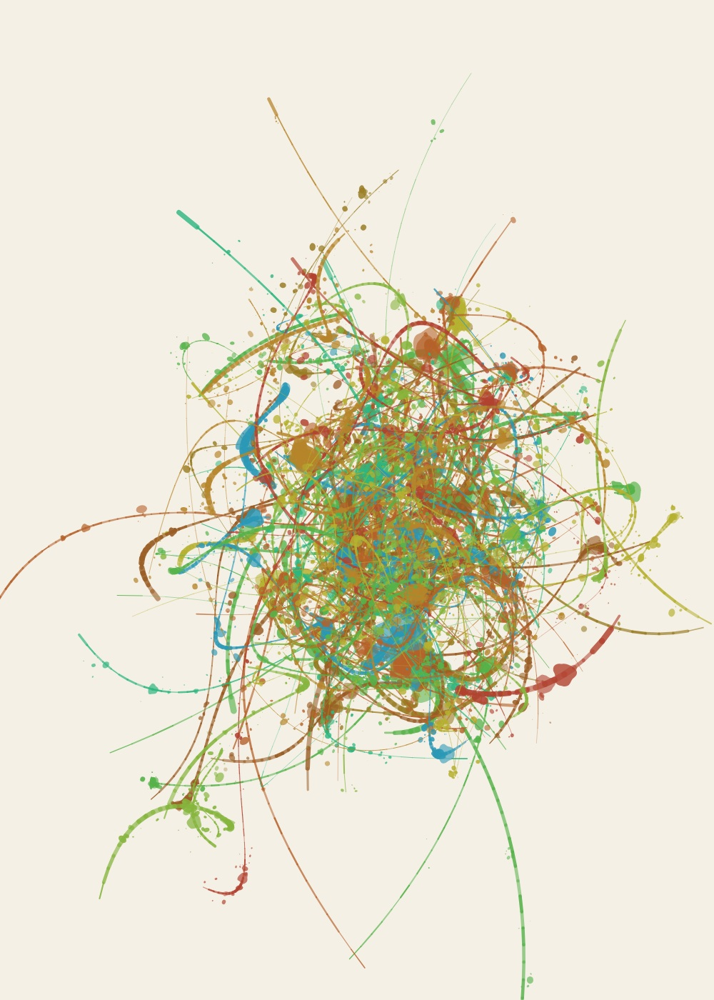
The golden ratio helps arrange each drawing. The material changes how those arrangements feel. Open a piece to see its settings, then change whatever you like.
MAKE YOUR OWN →